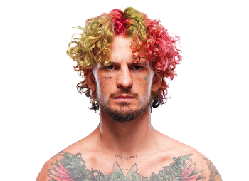

Sean O'Malley es un peleador estadounidense de artes marciales mixtas, conocido por su estilo extravagante, creatividad en el octágono y su capacidad para finalizar peleas con nocauts espectaculares. Nació el 24 de octubre de 1994 en Helena, Montana, Estados Unidos, y desde joven se interesó por el boxeo y las artes marciales mixtas, inspirándose en las figuras legendarias de la UFC.
O'Malley comenzó su camino en las MMA compitiendo en circuitos locales antes de firmar con la UFC. Su estilo se caracteriza por un striking dinámico, combinando técnicas de boxeo, kickboxing y movimientos poco convencionales que lo hacen difícil de predecir para sus oponentes. Gracias a su gran precisión, velocidad y creatividad, ha conseguido impresionantes nocauts que le han valido popularidad mundial.
Más allá de sus habilidades técnicas, Sean se ha destacado por su personalidad mediática, carisma y conexión con los fanáticos. Su presencia en redes sociales y estilo único le han permitido construir una gran base de seguidores, siendo considerado no solo un peleador talentoso, sino también un ícono cultural dentro del MMA moderno.

Sean O'Malley es reconocido por su striking creativo y dinámico, combinando movimientos inesperados con precisión quirúrgica. Sus principales características incluyen:
Desde su debut en UFC, O'Malley ha destacado rápidamente como uno de los prospectos más prometedores de la división de peso gallo. Ha logrado:
Sean O'Malley es también conocido por su creatividad fuera del octágono, colaborando en proyectos mediáticos y promocionales, siempre manteniendo una presencia constante entre los fanáticos de la UFC y de los deportes de combate.
Su historia es un ejemplo de dedicación, disciplina y creatividad, demostrando que en las artes marciales mixtas, no solo la fuerza y la técnica importan, sino también la personalidad y el estilo único para destacar en el escenario global.